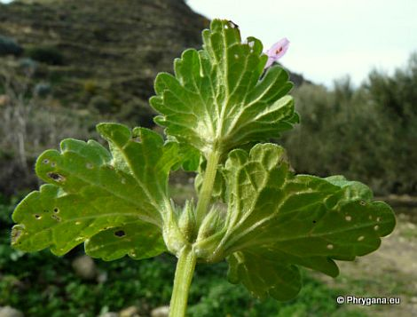

| PHRYGANA | Fauna | Flora | Galles | liste des espèces |
contact -
info - commentaires phrygana1 (at) gmail.com |
| Particularités crétoises | nouveautés | Mines | ressources naturelles |
| Lamium amplexicaule L. |
| 219 | Flora | LAMIACEAE | Lamium L. |
Lamium amplexicaule Kourtes (Zaros) 21 décembre 2010 |
| fr: le Lamier amplexicaule de: Stengelumfassende Taubnessel en: Henbit Deadnettle | |
| Feuilles: feuilles florales sessiles ou subsessiles, amplexicaules, légèrement pubescentes; limbe plus large que long, réniforme à cordiforme, crénelé; feuilles inférieures pétiolées | |
| Tige ascendante grêle | |
| Fleurs: corolle poilue, longue de 15 à 25 mm, rose franc à pourpre, sans marque foncée; tube nettement plus long que le calice, sans anneau de poils à l'intérieur; dents du calice dressées-conniventes après la floraison; calice poilu | |
| Fruits: carpelles lisses | |
| Hauteur: 10 - 35 cm | Type biologique: thérophyte ramifié |
| Floraison: janvier février mars avril mai décembre | |
| Altitudes: 0 - 2200 m | |
| Statut en Crète: indigène | |
| Biotopes en Crète: lieux rocailleux, terrains vagues, terrasses cultivées, olivaies, jardins, pâtures de montagnes, vignobles | |
| Distribution: Europe, région Méditerranéenne, Asie tempérée, devenant subcosmopolite | |
| Espèce héliophile. | |
|

Lamium amplexicaule Kourtes (Zaros) 21 décembre 2010 |
|
Lamium amplexicaule Kourtes (Zaros) 21 décembre 2010 |
|
Lamium amplexicaule Kourtes (Zaros) 21 décembre 2010 |
| 01 juillet 2013 |
| © paul fontaine -- © Phrygana.eu 2007 -- 2013 |